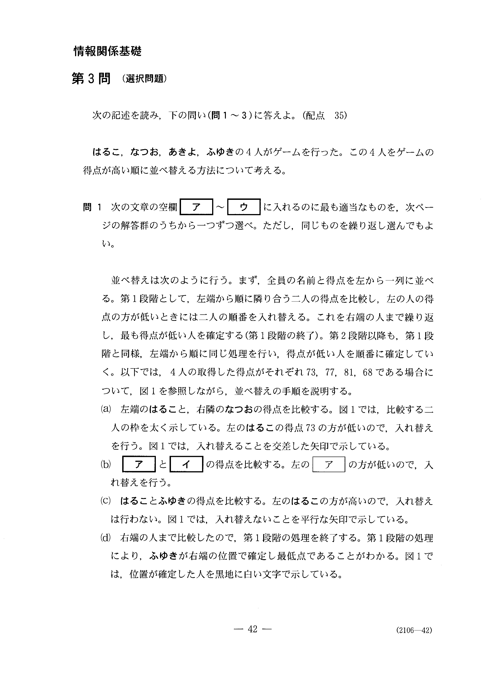
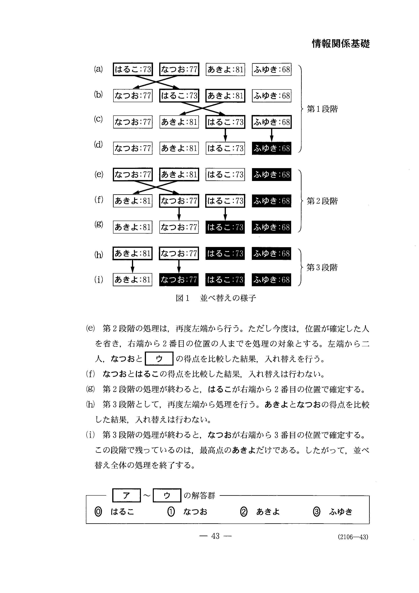
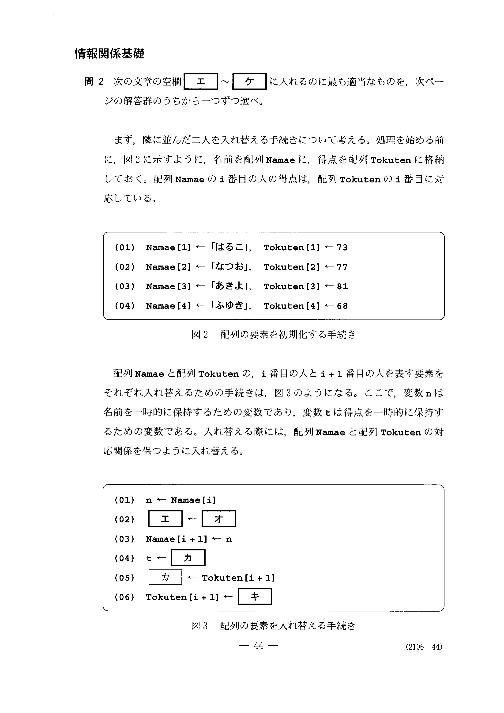
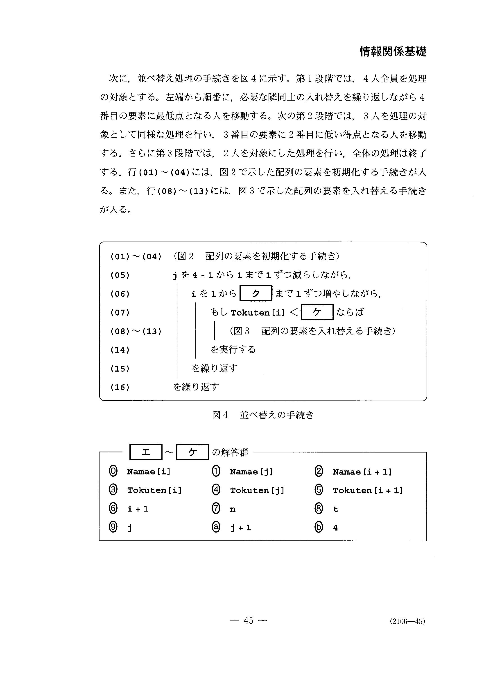
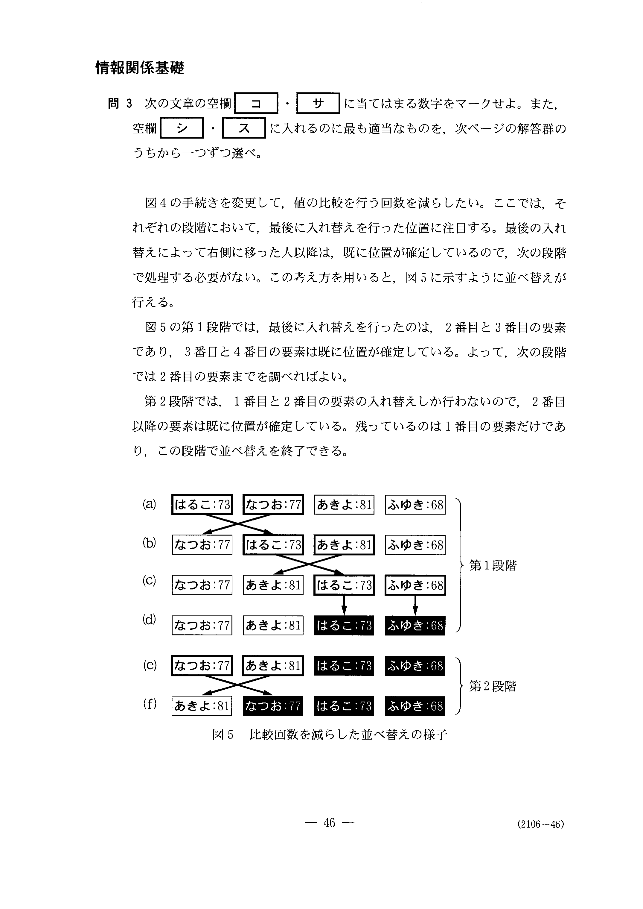
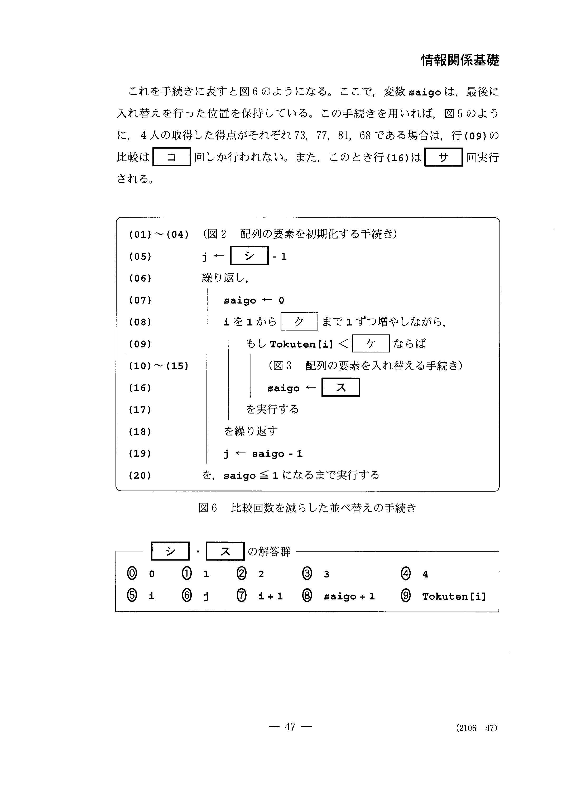

2008年度 大学入学共通テスト 情報関係基礎から#
題材: バブルソート#
if |
else |
elif |
前条件ループ |
後条件ループ |
for |
条件演算 |
switch |
一次元配列 |
二次元配列 |
配列初期化 |
|---|---|---|---|---|---|---|---|---|---|---|
◯ |
◯ |
◯ |
◯ |
情報処理学 問題作成部会の見解#
プログラミングを通じた論理的思考力を問う選択問題として出題して、3年目となる。 高等学校でのプログラミング実習量が異なることを考慮し、四則演算や配列操作を中心にして、 与えられた条件や手続きからアルゴリズムの動作を理解する能力を問う方針で作題している。
今回の出題は、バブルソートを用いた「並べ替え」を取り上げた。並べ替えの際には、 単に値だけを並べ替えるのではなく、名前も同時に並べ替えるようにした。 導入部分は、受験者が選択しやすいように、並べ替えの様子を図示してルールが理解しやすいように配慮した。 説明部分の文書量が多いため、受験者が理解しやすいように平易な表現に努めた。 また、処理手順の記述は、特定のプログラミング言語を出題に用いることにより生じる不公平を避けるため、 制限された構文を持つ日本語表記の言語を用いた。
問1#
「並べ替え」の手順の理解を問う導入問題である。 手順の説明に続き、それを実際に用いて4人の並べ替えを行う様子を追跡できることを問う設問としている。
【ア】・【イ】は並べ替えの初期段階に近い部分で、 処理の対象となる人を答える易しい設問であるため9割程度の正答率を予想した。いずれも正答率は予想どおりであった。
【ウ】は並べ替えがある程度進んだ状態で処理の対象となる人を答える問題であり、若干難しいと判断して8割程度の正答率を予想したが、 実際には9割程度の正答率だったため予想よりも受験者にとって易しい設問となっていた。


問題番号 (配点) |
設問 |
解答記号 |
正解 |
配点 |
備考 |
|---|---|---|---|---|---|
第３問 (35) |
1 |
ア |
0 |
2 |
はるこ |
イ |
2 |
2 |
あきよ |
||
ウ |
2 |
2 |
あきよ |
問2#
問1で説明した「並べ替え」を実際に手順に変換する方法について考える問題である。 要素を入れ替える手順を問う【エ】~【キ】は予想よりも若干低い7割弱の正答率であった。
【カ】・【キ】よりも【エ】・【オ】の方が低い正答率となったのは、 名前と得点の両方を入れ替える必要があることが理解しづらかったのではないかと考える。
【ク】の二重ループの内側のループの終了条件を問う問題は、5割程度の正答率を予想していたにもかかわらず、 3割弱しか正解しなかった。二重ループで、表全体を走査するような使い方では、外側と内側の両方が固定回数になるが、 今回の設問のようにすべての組合せを試すような場合には、内側のループの終了条件は外側のループ変数を用いたものとなる。 このような形式のループ構造に受験者が慣れていなかったことがうかがえる。


問題番号 (配点) |
設問 |
解答記号 |
正解 |
配点 |
備考 |
|---|---|---|---|---|---|
第３問 (35) |
2 |
エ |
0 |
3 |
|
オ |
2 |
3 |
|
||
カ |
3 |
3 |
|
||
キ |
8 |
3 |
|
||
ク |
9 |
3 |
|
||
ケ |
5 |
3 |
|
問3#
並べ替えに必要な比較処理の回数を減らすためのアルゴリズムを示し、 その理解と、手続きへの変換方法について考える問題である。
アルゴリズムの理解を問う【コ】・【サ】は、図から読み取ることも可能であるため、 5割程度の正答率を予想していたが、実際には4割程度となった。また、アルゴリズムを理解していないと正解を見つけられない
【ス】も2割程度しか正解していない。標準的なアルゴリズムをほんの少し変えただけのものであっても、 受験者にとっては難しい問題になってしまうことが分かる。


問題番号 (配点) |
設問 |
解答記号 |
正解 |
配点 |
備考 |
|---|---|---|---|---|---|
第３問 (35) |
3 |
コ |
4 |
2 |
|
サ |
3 |
3 |
|
||
シ |
4 |
3 |
|
||
ス |
5 |
3 |
|
第3問の選択率は、昨年とほぼ同じ、約4割台半ばとなった。受験者の学科別に分析すると、 普通科約半数に比べ、工業科約7割、商業科約3割とそれぞれ偏る傾向があった。 これは高等学校段階での既習傾向に要因があると推測できる。
第3問の平均得点率は、5割台後半程度と予想よりも若干低い結果となったが、 成績別の得点率は、ほぼ直線的な傾斜となっており、期待どおりの得点分布を示している。 このように、全体として第3問は、受験者の理解度の差により、ほぼ期待どおりの得点の分布を示す結果となった。
ChatGPTで解答してみる#
問2#
%%ai_ask
今らかpythonでプログラミングします
Sure, I can help you with Python programming. What do you need assistance with?
%%ai_continue
配列Nameに ("はるこ", "なつお", "あきよ", "ふゆき") を登録します。
以下は、Pythonで配列を作成する方法です。
Name = ["はるこ", "なつお", "あきよ", "ふゆき"]
このように、角括弧（[]）を使用して、配列の要素をカンマで区切って指定します。上記の例では、Nameという名前の配列に4つの要素が含まれています。
%%ai_continue
配列Tokutenに (73, 77, 81, 68) を登録します。NameとTokutenの添字は対応していることを覚えておいてください。
以下は、Pythonで2つの配列を作成する方法です。
Name = ["はるこ", "なつお", "あきよ", "ふゆき"]
Tokuten = [73, 77, 81, 68]
このように、それぞれの配列の要素をカンマで区切って指定します。上記の例では、Nameという名前の配列に4つの要素が含まれており、Tokutenという名前の配列にも4つの要素が含まれています。また、NameとTokutenの添字は対応していることが前提となっています。
Name = ["はるこ", "なつお", "あきよ", "ふゆき"]
Tokuten = [73, 77, 81, 68]
Name
['はるこ', 'なつお', 'あきよ', 'ふゆき']
Tokuten
[73, 77, 81, 68]
(01) Namae[1] ← 「はるこ」，Tokuten[1] ← 73
(02) Namae[2] ← 「なつお」，Tokuten[2] ← 77
(03) Namae[3] ← 「あきよ」，Tokuten[3] ← 81
(04) Namae[4] ← 「ふゆき」，Tokuten[4] ← 68
図2 配列の要素を初期化する手続き
%%ai_continue
配列Nameと配列Tokutenのi番目とi+1番目の要素を入れ替えてください。
以下は、Pythonで2つの配列の要素を入れ替える方法です。
# 配列Nameと配列Tokutenのi番目とi+1番目の要素を入れ替える
for i in range(len(Name)-1):
Name[i], Name[i+1] = Name[i+1], Name[i]
Tokuten[i], Tokuten[i+1] = Tokuten[i+1], Tokuten[i]
このように、forループを使用して、配列の要素を順番に入れ替えます。上記の例では、NameとTokutenのi番目とi+1番目の要素を入れ替えています。注意点として、forループの範囲は、配列の要素数から1を引いた値になっています。これは、i+1番目の要素が存在しない場合に、エラーが発生するのを防ぐためです。
%%ai_continue
ある添字iを指定したときに、配列Nameと配列Tokutenのi番目とi+1番目の要素をそれぞれ入れ替える手続きです。
一時変数を使ってください。
以下は、Pythonで指定した添字の要素を一時変数を使って入れ替える方法です。
# 添字iの要素を一時変数を使って入れ替える
i = 1 # 例として、i=1とします
temp_name = Name[i]
Name[i] = Name[i+1]
Name[i+1] = temp_name
temp_tokuten = Tokuten[i]
Tokuten[i] = Tokuten[i+1]
Tokuten[i+1] = temp_tokuten
このように、一時変数を使用して、指定した添字の要素を入れ替えます。上記の例では、i=1の場合を想定しています。一時変数を使用することで、要素の入れ替えがスムーズに行われます。
(01) n ← Namae[i]
(02) [エ] ← [オ]
(03) Namae[i+1] ← n
(04) t ← [カ]
(05) [カ] ← Tokuten[i+1]
(06) Tokuten[i+1] ← [キ]
図3 配列の要素を入れ替える手続き
問2に関する問題作成部会の見解 (1of2)#
問1で説明した「並べ替え」を実際に手順に変換する方法について考える問題である。 要素を入れ替える手順を問う【エ】~【キ】は予想よりも若干低い7割弱の正答率であった。
【カ】・【キ】よりも【エ】・【オ】の方が低い正答率となったのは、 名前と得点の両方を入れ替える必要があることが理解しづらかったのではないかと考える。
%%ai_continue
配列Tokutenをキーとして降順にソートしてください。
以下は、Pythonで配列をキーとして降順にソートする方法です。
# 配列Tokutenをキーとして降順にソートする
sorted_data = sorted(zip(Tokuten, Name), reverse=True)
Tokuten, Name = zip(*sorted_data)
このように、zip関数を使用して、TokutenとNameの要素をペアにして、sorted関数で降順にソートします。そして、zip関数を再度使用して、TokutenとNameを別々の配列に戻します。上記の例では、sorted_dataという変数に、TokutenとNameのペアを降順にソートした結果が格納されます。そして、zip関数とアスタリスク（*）を使用して、sorted_dataをTokutenとNameに分解しています。
%%ai_continue
組み込み関数を使わず、バブルソートを実装してください。要素の入れ替えは、これまでに回答のあった手順を使ってください。
以下は、Pythonでバブルソートを実装する方法です。
# バブルソートで配列Tokutenをキーとして降順にソートする
n = len(Tokuten)
for i in range(n):
for j in range(n-i-1):
if Tokuten[j] < Tokuten[j+1]:
# 要素を入れ替える
temp_tokuten = Tokuten[j]
Tokuten[j] = Tokuten[j+1]
Tokuten[j+1] = temp_tokuten
temp_name = Name[j]
Name[j] = Name[j+1]
Name[j+1] = temp_name
このように、2重のforループを使用して、バブルソートを実装します。外側のforループは、配列の要素数分繰り返します。内側のforループは、配列の要素を比較して、必要に応じて入れ替えます。上記の例では、Tokutenをキーとして降順にソートしています。
(01) ~ (04) (図2 配列の要素を初期化する手続き)
(05) jを4-1から1まで1ずつ減らしながら，
(06) ｜ iを1から[ク]まで1ずつ増やしながら，
(07) ｜ ｜ もしTokuten[i] < [ケ] ならば
(08) ~ (13) ｜ ｜ ｜ (図3 配列の要素を入れ替える手続き)
(14) ｜ ｜ を実行する
(15) ｜ を繰り返す
(16) を繰り返す
図4 並べ替えの手続き
Name = ["はるこ", "なつお", "あきよ", "ふゆき"]
Tokuten = [73, 77, 81, 68]
n = len(Tokuten)
for i in range(n):
for j in range(n-i-1):
if Tokuten[j] > Tokuten[j+1]:
# j番目とj+1番目の要素を入れ替える
temp_tokuten = Tokuten[j]
Tokuten[j] = Tokuten[j+1]
Tokuten[j+1] = temp_tokuten
temp_name = Name[j]
Name[j] = Name[j+1]
Name[j+1] = temp_name
Name
['ふゆき', 'はるこ', 'なつお', 'あきよ']
Tokuten
[68, 73, 77, 81]
問2に関する問題作成部会の見解 (2of2)#
問1で説明した「並べ替え」を実際に手順に変換する方法について考える問題である。 要素を入れ替える手順を問う【エ】~【キ】は予想よりも若干低い7割弱の正答率であった。
【ク】の二重ループの内側のループの終了条件を問う問題は、5割程度の正答率を予想していたにもかかわらず、 3割弱しか正解しなかった。二重ループで、表全体を走査するような使い方では、外側と内側の両方が固定回数になるが、 今回の設問のようにすべての組合せを試すような場合には、内側のループの終了条件は外側のループ変数を用いたものとなる。 このような形式のループ構造に受験者が慣れていなかったことがうかがえる。
問3#
%%ai_continue
最後に要素の入れ替えが行われた位置以降は順番が確定しているので、
その添字を記憶することで配列Tokutenの比較の回数を減らすことはできますか？
はい、可能です。以下は、Pythonで最後に要素の入れ替えが行われた位置以降は順番が確定していることを利用して、配列Tokutenの比較の回数を減らす方法です。
# 最後に要素の入れ替えが行われた位置以降は順番が確定しているので、その添字を記憶する
n = len(Tokuten)
last_swap_index = n - 1
for i in range(n):
is_sorted = True
for j in range(last_swap_index):
if Tokuten[j] < Tokuten[j+1]:
# 要素を入れ替える
temp_tokuten = Tokuten[j]
Tokuten[j] = Tokuten[j+1]
Tokuten[j+1] = temp_tokuten
temp_name = Name[j]
Name[j] = Name[j+1]
Name[j+1] = temp_name
is_sorted = False
last_swap_index = j
if is_sorted:
break
このように、last_swap_indexという変数を使用して、最後に要素の入れ替えが行われた位置以降は順番が確定していることを記憶します。内側のforループでは、last_swap_indexまでの要素を比較して、必要に応じて入れ替えます。そして、is_sortedという変数を使用して、配列がソート済みかどうかを判定します。is_sortedがTrueの場合は、配列がソート済みであるため、外側のforループを終了します。このようにすることで、配列Tokutenの比較の回数を減らすことができます。
(01) ~ (04) (図2 配列の要素を初期化する手続き)
(05) j ← [シ] - 1
(06) 繰り返し，
(07) ｜ saigo ← 0
(08) ｜ iを1から[ク]まで1ずつ増やしながら，
(09) ｜ ｜ もしTokuten[i] < [ケ] ならば
(10) ~ (15) ｜ ｜ ｜ (図3 配列の要素を入れ替える手続き)
(16) ｜ ｜ ｜ saigo ← [ス]
(17) ｜ ｜ を実行する
(18) ｜ を繰り返す
(19) ｜ j ← saigo - 1
(20) を，saigo ≤ 1になるまで実行する
図6 比較回数を減らした並べ替えの手続き
問3に関する問題作成部会の見解#
並べ替えに必要な比較処理の回数を減らすためのアルゴリズムを示し、 その理解と、手続きへの変換方法について考える問題である。
アルゴリズムの理解を問う【コ】・【サ】は、図から読み取ることも可能であるため、 5割程度の正答率を予想していたが、実際には4割程度となった。また、アルゴリズムを理解していないと正解を見つけられない
【ス】も2割程度しか正解していない。標準的なアルゴリズムをほんの少し変えただけのものであっても、 受験者にとっては難しい問題になってしまうことが分かる。